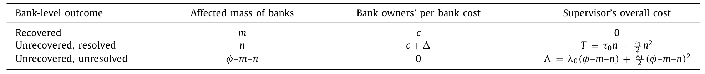
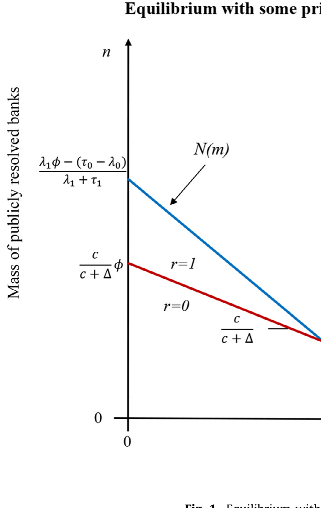
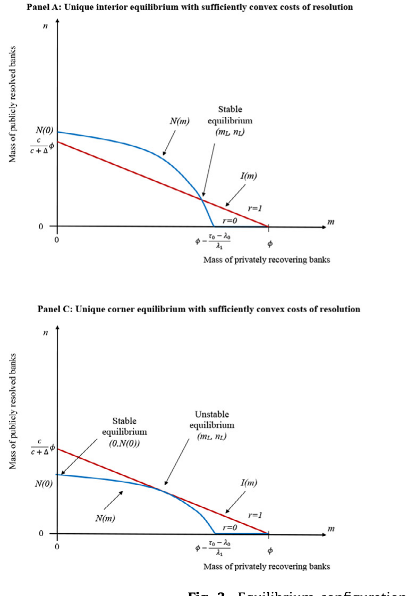
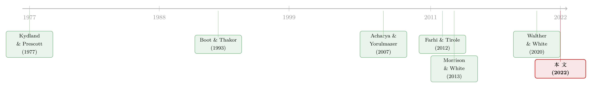

威胁，必须可信：一场银行「救还是不救」的胆小鬼博弈
本文读的是 Martynova, Perotti & Suarez (2022, Journal of Financial Economics)：监管者想用「不救你、直接处置」来逼迫资本不足的银行自掏腰包补血，可一旦真到了那一刻，处置本身带来的声誉、政治、财政与经济代价，会让监管者临阵退缩、选择「睁一只眼闭一只眼」。这种资本宽容（capital forbearance）并非懒政，而是一个承诺问题（commitment problem）的均衡产物——而当处置成本随着出问题的银行数量陡峭上升时，银行甚至会合谋摆烂，造出一个「多到没法处置」的坏均衡。
1 引言：一个说了不算的威胁
先想象一个场景。压力测试做完，监管者把几家资本不足的银行叫到办公室，递上一句话：「自己想办法补充资本（私人增资），否则我就动用公共资金强制处置你——稀释你的股权、撤换你的管理层、限制你的薪酬。」
听上去，这是一个相当有威慑力的威胁。处置（resolution）对银行内部人来说是顶顶难受的事：控制权没了，租金没了，连发奖金的自由都没了。理性的银行应该乖乖增资才对。
可现实里，我们一次又一次看到相反的剧本。1980 年代美国储贷协会（S&L）危机里，延迟干预把窟窿越拖越大（Degennaro and Thomson, 1996）；2010 年欧洲银行管理局前身 CEBS 的压力测试，估算只要 25 亿欧元 就能补足缺口，而市场的估计是 3000 亿欧元——后者被证明「准确得多」；比利时的 Dexia 银行在 2011 年 7 月还报告着 10% 以上的资本充足率，三个月后就垮了。监管者手里明明握着处置这把刀，为什么总是迟迟不肯落下？
这就是本文要回答的张力：当「不救」的威胁本身代价高昂，威胁就会失去可信度；而银行早就把监管者的这份「不忍心」算进了自己的账本。
接着，一个自然的问题是：这份「不忍心」究竟从何而来，又会如何反过来塑造银行的行为？本文的回答是一个干净的博弈论模型。它把监管者和一群受到冲击的银行放在同一张桌子上，让我们看清——宽容不是失误，而是均衡。
2 反直觉的起点：处置为什么是「威胁」而不是「礼物」
要理解整个故事，得先纠正一个常见的误解。很多人把公共注资想象成对银行的「恩赐」：政府掏钱填窟窿，股东岂不偷着乐？
本文的建模恰恰相反，而且这个假设是整个模型的地基。作者引用 Berger et al. (2021) 对 2008–2014 年美国公共注资的细致刻画，称这套流程是「抓住、约束、再释放（catch, restrict, and release）」：监管者一旦介入，「通常会强加分红禁令、监管费用、董事提名、高管限薪以及其他经营限制」，只有在银行恢复健康后才解除这些束缚。Mücke et al. (2021) 进一步发现，资本购买计划（Capital Purchase Program, CPP）下，只要银行漏付了六次优先股股息，政府就有权委派独立董事进董事会——这恰恰说明，控制权对银行内部人是有价值的，被夺走是要肉疼的。
于是模型里写下了一条关键排序：对银行内部人而言，处置比私人增资更贵。这一条看似简单，却是后面所有反转的源头。
接下来，让我们把这套直觉写成数学。
3 模型：三个日期，三种选择
模型有三个日期 \(t=0,1,2\)，所有人风险中性，存在一种净回报为零的安全资产。银行由初始股东持有、并以其利益经营，对未来现金流的贴现率也归一化为零。银行有一笔在 \(t=2\) 承诺偿付 \(D\) 的负债（先假设全是受保存款）。
在 \(t=0\)，一团质量为 \(\varphi\) 的银行被一次偿付能力冲击「打伤」。这意味着它们的资产在 \(t=2\) 以概率 \(1-\varepsilon\)（正常状态）偿付 \(R>D\)，以概率 \(\varepsilon\)（不利状态）只偿付 \(D-s\)，其中 \(s\in(0,D]\)，从而违约失败。失败会带来一些银行自己不会内部化的系统性成本。

Table 1: summarizes the variables and payoffs relevant
面对一家受伤的银行，故事在 \(t=1\) 分叉成三条路。
第一条：私人恢复（recovery, \(r=1\)）。 股东自己注入新股本 \(s\)，刚好够在不利状态里避免失败。此时初始股东的净期望收益（含控制租金 \(\Delta\)）为
$$\Pi_{r=1} = -s + (1-\varepsilon)(R+s-D) + \Delta. \tag{1}$$
我们把这个最核心的方程拆开来看——它正是理解全文的钥匙：
第二条：处置（resolution, \(r=0, i=1\)）。 银行不肯增资，监管者强制注资：外部股权提供者（也许是监管者自己的处置基金）注入 \(s\)，换取份额 \(\alpha\)。这笔强制注资并不构成对原股东的「救助」——\(\alpha\) 被设定为让新股东恰好盈亏平衡：
$$\alpha(1-\varepsilon)(R+s-D) = s. \tag{2}$$
关键在于，处置会把初始股东的控制租金 \(\Delta\) 彻底蒸发掉。于是处置下原股东的收益为
$$\Pi_{r=0,i=1} = (1-\alpha)(1-\varepsilon)(R+s-D) = (1-\varepsilon)(R-D) - \varepsilon s. \tag{3}$$
它恰好比 \(\Pi_{r=1}\) 低了整整一个 \(\Delta\)。
第三条：宽容（forbearance, \(r=0, i=0\)）。 银行既不增资、监管者也不处置，任其带着不足的资本继续经营、听天由命：
$$\Pi_{r=0,i=0} = (1-\varepsilon)(R-D) + \Delta. \tag{4}$$
现在把三条路一字排开，银行内部人的偏好顺序一目了然：宽容 $>$ 恢复 $>$ 处置。以「不恢复、不处置」为基准，恢复的净成本是
$$\Pi_{r=0,i=0} - \Pi_{r=1} = \varepsilon s \equiv c > 0, \tag{5}$$
它衡量的是股东向债权人（或存款保险基金）做出的隐性正向转移——用作者的话说，是股东放弃了他们在风险资产上的 Merton (1977) 看跌期权。而处置的成本是
$$\Pi_{r=0,i=0} - \Pi_{r=0,i=1} = \varepsilon s + \Delta \equiv c + \Delta. \tag{6}$$
把 (5) 和 (6) 放在一起，整个博弈的引擎就显形了：银行最想要宽容（什么都不用做、还保住控制权）；但若被逼到墙角，它宁可恢复（成本 \(c\)）也不愿被处置（成本 \(c+\Delta\)）。所以处置威胁能不能逼出恢复，全看银行相不相信监管者真会动手。
4 基准博弈：为什么「救自己」是一种战略替代
那么监管者会不会动手？这正是承诺问题的核心。监管者要在处置的短期代价（声誉、政治、财政成本）与未来系统性困境的代价之间权衡。本文假设：处置成本随处置规模递增且凸，未来系统性成本也随未恢复银行的数量递增且凸。
于是关键的一步出现了。监管者面对一群没恢复的银行时，并不会把它们全部处置——它会权衡边际处置成本与边际系统性成本，留下一部分不处置。任何被预期到的宽容，都会反过来喂给银行「不增资」的激励。
在基准模型里，均衡有两种形态：要么是无人恢复的角点均衡，要么是一个混合策略的内部均衡——只有一部分受伤银行选择恢复，且只有一部分未恢复银行被处置（其余的享受了宽容）。

Figure 1: Equilibrium with
为什么会出现这个内部均衡？因为在基准设定里，银行各自的恢复决策是战略替代（strategic substitutes）。直觉很顺：当更多银行恢复了偿付能力，未来系统性困境的成本就下降，监管者处置剩下那些银行的压力也随之减小——于是每家银行「搭上宽容便车」的概率反而上升了。别人越是认真补血，我就越敢躺平。每家银行恢复的边际激励，随着恢复银行的质量上升而下降，这就是战略替代性的来源。
接着，本文给出了一个相当反直觉的比较静态：一个处置成本更高的监管者，最终可能被迫处置更多的银行（同时也留下更多银行带病经营）。这像极了多方的胆小鬼博弈（game of chicken）——当监管者面对每个挑战的回应意愿或能力随挑战数量上升而下降时，银行就更不愿合规；而面对低合规率，哪怕一个本就软弱的监管者，为了控住社会成本，也不得不处置更多银行。一个软弱的警察队伍遇到更猖獗的违法，反而被逼着进行更大规模的执法——是一个贴切的类比。
5 反转：当处置成本陡增，「多到没法处置」
故事到这里还没完。真正关键的一步，是作者把模型推到一个极端：监管者面对资源约束，或处置的边际成本随干预规模陡峭上升（比如早期干预的政治与声誉后果随规模急剧恶化）。
于是反转出现了。在这种情形下，由于监管者的回应越来越软，处置威胁会随着未恢复银行数量的增加而衰减——这恰恰把银行的恢复决策从战略替代翻转成战略互补（strategic complements）。

Figure 3: Equilibrium configurations
战略互补意味着什么？意味着银行可以协调在低恢复上：既然大家都不增资、监管者就更不敢处置，那我也不增资。这便产生了「多到没法处置（too-many-to-resolve）」现象——一个高宽容、高系统性成本的坏均衡。这与 Acharya and Yorulmazer (2007) 的「多到不能倒（too-many-to-fail）」遥相呼应，但机制更细：本文明确指出，恢复决策在边际上究竟是替代还是互补，关键取决于监管者处置成本相对于被处置银行质量的凸性程度。成本随规模上升得越陡，处置威胁在未恢复银行足够多时就越不可信，「多到没法处置」的均衡就越容易存在。
这里藏着一个对政策极其重要的颠覆。人们常担心「可信地承诺注资」会加剧道德风险。但本文的结论恰恰相反：对那些被叫去恢复、却仍资本不足的银行，可信且足够严厉的公共股权注入承诺，反而能提升私人合规、避免日后的系统性成本与救助损失。 宽容不是给银行的胡萝卜，恰恰是因为大棒举不起来。
这也解释了欧洲银行业联盟（Banking Union）改革的若干设计动机：把治理从地方的财政、声誉与政治经济考量中独立出来，配备足够的人力与财力，正是为了让恢复与处置框架变得可信（ESRB, 2012）。但改革并未给框架提供完整的财政后盾，也把许多中小银行留在了单一处置框架之外（Restoy, 2019）——可信度的拼图，至今仍缺一角。
6 文献脉络
把这篇论文放回它生长的土壤里看，它处在三条河流的交汇处。
最上游，是 Kydland and Prescott (1977) 关于最优政策时间不一致（time inconsistency）的经典命题——它在货币政策（Barro and Gordon, 1983）、公司金融（Chari and Kehoe, 2016）里都开枝散叶。监管者「事前想威胁、事后下不去手」，本质就是这一问题在银行处置里的化身。

第二条河，是自利型监管与宽容的理论。Boot and Thakor (1993) 与 Morrison and White (2013) 指出，监管者拖延干预，可能是为了掩盖糟糕的过往决策或避免声誉传染；Walther and White (2020) 则刻画了一个拥有 bail-in 裁量权、却因「纾困可能触发挤兑」而可信度受限的监管者。本文与这一支的呼应最深——它把「监管者下不去手」从动机层面推进到了多银行的战略互动层面。
第三条河，是救助的策略性互动与系统性风险。Acharya and Yorulmazer (2007) 的「多到不能倒」、Farhi and Tirole (2012) 的集体道德风险，都指向救助政策如何制造战略互补、诱发事前的过度冒险。本文的新意，在于它不预设替代或互补，而是内生地让监管者处置成本的凸性来决定恢复决策的战略性质——这是相对上述所有工作的一处关键推进。
关于「承诺」这根缰绳如何套在资本监管上，可参见《规则还是相机抉择？——给银行资本监管装上一根「承诺」的缰绳》；关于监管独立性如何左右一家银行何时倒下，可参见《选不选他，决定了银行什么时候倒》；而关于灾难之后「谁该被救」的最优政策设计，则可对照《灾难之后，谁该被「救」？》。
7 评论与延伸（Q&A + 研究方向）
(a) 几个可能的疑问
Q：这跟「太大而不能倒（too-big-to-fail）」是一回事吗？
不是。太大而不能倒讲的是单家机构因规模/关联而被迫救助；本文的「多到没法处置」讲的是数量——许多中等银行同时出问题，使处置的边际成本陡增、威胁失效，从而诱发它们协调摆烂。机制上更接近 Acharya and Yorulmazer (2007) 的「多到不能倒」，而非规模逻辑。
Q：把公共注资建模成对股东的「惩罚」，现实吗？
这是本文最要紧的假设，作者用了相当多的实证来支撑它：Berger et al. (2021) 的「抓住、约束、再释放」、Mücke et al. (2021) 的独立董事委派权、Wilson and Wu (2012) 的高管限薪促使银行提前退出 TARP。这些都指向控制租金 \(\Delta\) 的真实存在。若在某些法域注资条件宽松，模型结论会被削弱。
Q：内部均衡用混合策略，是不是太「数学」了，缺乏现实对应？
作者借 Harsanyi (1973) 的「净化（purification）」给了一个现实解释：随机化的恢复决策，可以重新诠释为银行基于某个不可观测特征（比如真实杠杆，在不透明的资产负债表下难以评估）做出的确定性选择。所以「一部分银行恢复」对应的是异质性，而非真的掷硬币。
Q：比较静态说「处置成本更高的监管者反而处置更多银行」，这不矛盾吗？
不矛盾，这正是胆小鬼博弈的精髓。监管者越软，银行越敢不合规；面对极低的合规率，即便软弱的监管者为了压住社会成本也不得不出手处置更多。高成本监管者陷入的是「威胁不可信 → 合规崩塌 → 被迫大规模处置」的恶性链条。
Q：模型先假设负债全是受保存款，放松这一点会怎样？
受保存款让「股东放弃 Merton 看跌期权」这条逻辑最干净——恢复的成本 \(c=\varepsilon s\) 直接是对存款保险基金的隐性转移。若引入无保险债权人或可 bail-in 的负债，恢复与处置的相对成本会改变，但只要处置仍蒸发控制租金 \(\Delta\)，核心张力就还在。
Q：本文是纯理论，有没有被直接检验过？
没有。作者很诚实地说，现有实证「没有一篇能算作对本文经验含义的正式检验」。Agarwal et al. (2014)、Hirtle et al. (2020) 提供了「更强监管→更好银行表现」的旁证，Reinhart and Rogoff (2011)、Eisenbach et al. (2022) 则间接呼应了「财政/资源约束→更严重危机」。但恢复与处置这条具体渠道，仍是空白。
(b) 几个可能的研究问题与提案
1. 处置威胁可信度的横截面度量。
【经济故事】本文的关键变量是监管者处置成本的凸性与威胁可信度，但这些在现实中几乎不可观测。能不能从市场价格里「读」出来？比如用银行 CDS 利差或股价对处置/bail-in 事件（如 Dell'Ariccia et al., 2018b 记录的那些）的反应，构造一个「市场预期的处置概率」。 【可行性】中。事件研究 + 横截面回归是 doable 的；难点在于把「可信度」与「银行基本面」分离开，需要外生的监管制度变更（如单一处置机制 SRM 的引入）做断点。
2. 公司债市场里的「宽容」溢价。
【经济故事】如果债券持有人预期监管者会宽容（而非及时处置），那么资本不足银行的债券应当反映出一个「被宽容溢价」——更低的违约预期、更窄的利差。资本宽容会不会扭曲银行债的定价与流动性？ 【可行性】中。数据上需要银行层面的资本充足率（监管披露）+ 债券二级市场利差（TRACE 类数据）。识别上可借助压力测试结果公布这一外生信息冲击，比较「擦边通过」与「擦边未过」银行的债券反应。
3. 外资持有人与处置威胁的政治经济学。
【经济故事】本文强调处置的政治成本来自本地选民、就业与选举（Brown and Dinç, 2005; Liu and Ngo, 2014; Bian et al., 2020）。如果一家银行的债权人/股东以外资为主，监管者「不忍心」的政治权重会不会下降，从而处置威胁更可信？外资持有比例可能成为可信度的工具变量。 【可行性】中偏低。需要银行债权人/股东的国籍构成数据（部分可从持仓数据库拼凑），识别上要担心外资持股本身与银行质量内生。但思路新颖，值得探索。
4. 「多到没法处置」的时序检验。
【经济故事】模型预测：当受伤银行数量越过某个阈值，恢复决策从战略替代翻转为战略互补，私人增资会突然「集体熄火」。这是否能在危机时序数据里看到——增资意愿对「同期出问题银行数量」呈现非线性、甚至断崖式下降？ 【可行性】高。用历次银行业危机中的私人增资/SEO 事件（Chiarella et al., 2019 类数据）对同期受困银行规模做非线性回归即可，关键是找到刻画「同期挑战规模」的好代理。
8 我的判断
这篇论文的贡献，在于它用一个极简而锋利的博弈模型，把「资本宽容」从「监管者无能或懒政」的道德叙事里解救出来，重新安放到承诺问题的均衡上：威胁之所以失效，不是因为监管者不想动手，而是因为动手的代价被银行精确地算进了自己的账本。更难得的是，它没有预设恢复决策是替代还是互补，而是让监管者处置成本的凸性内生地决定这一性质——这把 Perotti (2002) 的战略替代与 Acharya and Yorulmazer (2007)、Farhi and Tirole (2012) 的战略互补，统一进了同一个框架的两端。那个「可信的严厉承诺反而降低道德风险」的政策反转，也相当漂亮。
对它的担忧，主要在两点。其一是可检验性：模型的核心变量——处置成本的凸性、威胁可信度、控制租金 \(\Delta\)——几乎都难以直接观测，作者自己也坦承现有实证只能算「广义一致」，离正式检验尚远。其二是负债结构的简化：把负债设为全额受保存款，让逻辑干净，却也回避了 bail-in 在系统性危机中可能引发挤兑这一现实复杂性（这恰是 Walther and White, 2020 的关切）。
往后我最想看到的，是有人能找到一个外生冲击——比如单一处置机制的引入、或某次处置成本的制度性变化——把「威胁可信度」这个抽象概念锚定到可观测的数据上，让这套优雅的理论真正接受一次经验的拷问。
参考文献
- Acharya, V.V., Yorulmazer, T. (2007). Too many to fail? An analysis of time-inconsistency in bank closure policies. Journal of Financial Intermediation 16, 1–31.
- Agarwal, S., Lucca, D., Seru, A., Trebbi, F. (2014). Inconsistent regulators: Evidence from banking. Quarterly Journal of Economics 129, 889–938.
- Barro, R.J., Gordon, D.B. (1983). Rules, discretion and reputation in a model of monetary policy. Journal of Monetary Economics 12, 101–121.
- Berger, A.N., Nistor, S., Ongena, S.R.G., Tsyplakov, S. (2021). Catch, Restrict, and Release: The Real Story of Bank Bailouts. Swiss Finance Institute Research Paper No. 20-45.
- Boot, A.W.A., Thakor, A.V. (1993). Self-interested bank regulation. American Economic Review 83, 206–212.
- Brown, C.O., Dinç, I.S. (2005). The politics of bank failures: Evidence from emerging markets. Quarterly Journal of Economics 120, 1413–1444.
- Degennaro, R.P., Thomson, J.B. (1996). Capital forbearance and thrifts: examining the costs of regulatory gambling. Journal of Financial Services Research 10, 199–211.
- Eisenbach, T.M., Lucca, D.O., Townsend, R.M. (2022). Resource allocation in bank supervision: trade-offs and outcomes. Journal of Finance 77, 1685–1736.
- Farhi, E., Tirole, J. (2012). Collective moral hazard, maturity mismatch and systemic bailouts. American Economic Review 102, 60–93.
- Harsanyi, J.C. (1973). Games with randomly distributed payoffs: a new rationale for mixed-strategy equilibrium points. International Journal of Game Theory 2, 1–23.
- Hirtle, B., Kovner, A., Plosser, M. (2020). The impact of supervision on bank performance. Journal of Finance 75, 2765–2808.
- Kydland, F.E., Prescott, E.C. (1977). Rules rather than discretion: the inconsistency of optimal plans. Journal of Political Economy 85, 473–490.
- Martynova, N., Perotti, E., Suarez, J. (2022). Capital forbearance in the bank recovery and resolution game. Journal of Financial Economics 146(3), 884–904.
- Merton, R.C. (1977). An analytic derivation of the cost of deposit insurance and loan guarantees. Journal of Banking & Finance 1, 3–11.
- Morrison, A.D., White, L. (2013). Reputational contagion and optimal regulatory forbearance. Journal of Financial Economics 110, 642–658.
- Mücke, C., Pelizzon, L., Pezone, V., Thakor, A. (2021). The Carrot and the Stick: Bank Bailouts and the Disciplining Role of Board Appointments. ECGI Finance Working Paper 742.
- Perotti, E. (2002). Lessons from the russian meltdown: the economics of soft legal constraints. International Finance 5, 359–399.
- Reinhart, C.M., Rogoff, K.S. (2011). From financial crash to debt crisis. American Economic Review 101, 1676–1706.
- Walther, A., White, L. (2020). Rules versus discretion in bank resolution. Review of Financial Studies 33, 5594–5629.
- Wilson, L., Wu, Y.W. (2012). Escaping TARP. Journal of Financial Stability 8, 32–42.